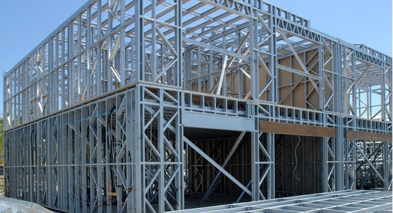

Steel frames
Steel frame is a building technique with a "skeleton frame" of vertical steel columns and horizontal I-beams, constructed in a rectangular grid to support the floors, roof and walls of a building which are all attached to the frame. The development of this technique made the construction of the skyscraper possible.
The rolled steel "profile" or cross section of steel columns takes the shape of the letter "I". The two wide flanges of a column are thicker and wider than the flanges on a beam, to better withstand compressive stress in the structure. Square and round tubular sections of steel can also be used, often filled with concrete. Steel beams are connected to the columns with bolts and threaded fasteners, and historically connected by rivets. The central "web" of the steel I-beams is often wider than a column web to resist the higher bending moments that occur in beams.
Wide sheets of steel deck can be used to cover the top of the steel frame as a "form" or corrugated mold, below a thick layer of concrete and steel reinforcing bars. Another popular alternative is a floor of precast concrete flooring units with some form of concrete topping. Often in office buildings, the final floor surface is provided by some form of raised flooring system with the void between the walking surface and the structural floor being used for cables and air handling ducts.
The frame needs to be protected from fire because steel softens at high temperature and this can cause the building to partially collapse. In the case of the columns this is usually done by encasing it in some form of fire resistant structure such as masonry, concrete or plasterboard. The beams may be cased in concrete, plasterboard or sprayed with a coating to insulate it from the heat of the fire or it can be protected by a fire resistant ceiling construction. Asbestos was a popular material for fireproofing steel structures up until the early 1970s, before the health risks of asbestos fibres were fully understood.
The exterior "skin" of the building is anchored to the frame using a variety of construction techniques and following a huge variety of architectural styles. Bricks, stone, reinforced concrete, architectural glass, sheet metal and simply paint have been used to cover the frame to protect the steel from the weather.
Some steel hangar